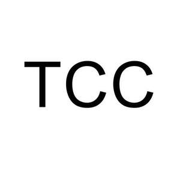

Trade Mark Journal No.2025/046 14 November 2025
UK00004269352 25 September 2025 (4,7,9,11,37,39,40,42)

- Class 4
- Electrical energy; Electrical energy from solar power; Electrical energy from wind power.
- Class 7
- Generators for wind turbines; Wind-powered electricity generators.
- Class 9
- Solar panels for electricity generation; Solar energy collectors for electricity generation; Solar energy collectors for electricity generation; Photovoltaic apparatus for generating electricity; Solar panels for the production of electricity; Solar batteries; Photovoltaic cells; Solar-powered rechargeable batteries; Energy-saving apparatus, namely apparatus for improving power efficiency; Apparatus for monitoring electrical energy consumption; Electric control devices for energy management.
- Class 11
- Solar thermal collectors[heating]; Solar heating panels; Solar heating apparatus; Processing installations for fuel and nuclear moderating material; Nuclear reactors; Installations for processing nuclear fuel and nuclear moderating material; Air purifying apparatus; Waste water purification installations; Waste water treatment tanks; Desalination apparatus; Sea water desalination plants.
- Class 37
- Maintenance and repair of energy generating installations; Vehicle battery charging; Charging of electric vehicles; Reservation of charging stations for electric vehicles; Electric vehicle battery swapping services; Rental of portable battery chargers for electric cars; Rental of battery chargers.
- Class 39
- Electricity distribution; Supply of electricity; Distribution and transmission of electricity; Distribution of energy; Power supply and distribution; Transport by pipeline.
- Class 40
- Recycling and waste treatment; Rental of batteries.
- Class 42
- Engineering consultancy in the field of production of electricity from liquefied natural gas; Consultancy in the field of energy-saving.
TCC Group Holdings CO., LTD.
Representative: Trademarkit LLP